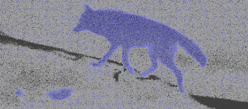
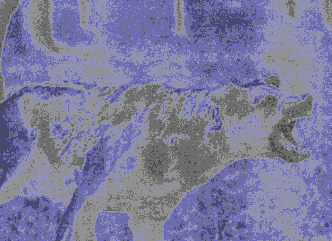

01 지진파지구 내부에서 암석의 급격한 파괴로 발생하는 지진에 의해 탄성체인 지구 내부 또는 표면을 따라 전파되는 탄성파를 지진파라 한다.
지진파는 전파 특성에 따라 실체파와 표면파로 나눌 수 있다. 실체파는 지구 내부 깊숙이 전파되어 지표에 도달하며, P파와 S파가 있다.
P파는 1초에 7~8km의 빠른 속도로 작은 파동을 일으키며 움직이고, 지각에서의 전파속도는 5~7km/sec 이다. 어떤 매질을 전파해 갈 때, 전파 방향으로 입자들 사이의 간격을 탄성적으로 압축과 팽창을 반복하여 부피의 변화를 일으킨다. S파는 1초에 3~4km의 느린 속도로 큰 파동을 일으키며 움직인다. P파의 전파속도보다 약 1.7배 느리다. 지진파의 전파 방향에 직각으로 매질을 진동시킴으로써 매질의 모양의 변화를 일으키며, 지진기록에서 P파의 진폭보다 크게 나타난다.
about
동물들은 지진파 중 p파를 감지할 수 있다.
지진이 발생할 때는 p파와 s파가 있는데 지진을 측정하는 관측소에서 지진의 기록을 보면 가장 빠른 속도인 p파가 먼저 감지된다.동물들은 이런 빠른 속도의 p파의 진동을 느끼고 대피를 한다.
미국 지질조사국(USGS)의 과학자들은 포유류의 진동감지기관이 이 P파를 미리 감지하는 것으로 추정하고 있다. 이들은 “사람보다 예민한 동물이 지진이 발생할 때 가장 빨리 감지되는 P파를 느끼고 이상 행동을 보이는 것을 우리가 ‘지진을 예측했다’고 해석하는 것”이라고 설명했다. 자기장을 감지하는 능력은 일부 곤충과 포유류가 갖고 있는 만큼 지진으로 발생하는 미세한 변화를 파악하고 미리 움직였을 수 있다고 보는 것이다.
이상 증상 abnormal symptoms
포유류Mammals
Nervous
8.21
Running away
-2.62
Group behavior
-10.21
Crying
4.80
Exited
1.38
Misc
0.61
Slow to react
-3.23
Eating
0.54

about
포유류 (Mammals)에서는 불안행동(Nervous)과 울음소리(Crying) 에 관한 이상행동이 상대적으로 다수 목격되었음을 알 수 있다. 즉 안절부절 못함(Nervous, anxious)이나 미친 듯이 짖음(Barking or making strange noises)과 같은 이상행동이 포유류에서 주로 나타났다.

* 포유류 중에서도 가축, 그 중에서도 고양이나 개와 같은 애완동물의 이상행동 목격사례 비율이 높은 이유는 사람들과 생활터전을 함께하고 장시간 교감하는 애완동물의 이상행동 을 목격하는 빈도가 높을 수밖에 없기 때문이라 사료된다.
이상 증상 - 목격시기
Just before
Nervous
Crying
1-day — 6-day
Excited
Slow to react
Eating&
포유류(Mammals)의 경우(Table 7-a), 지진발생 직전(Just before)에 불안행동(Nervous)과 울음소리(Crying)에 대한 이상행동이 두드러지게 나타남을 알 수 있다. 또한 1일(1-day)부터 6일(6-day)전에 흥분행동(Excited), 행동둔화(Slow to react), 섭식장애(Eating&)와 같은 이상행동이 다수 목격됐다.